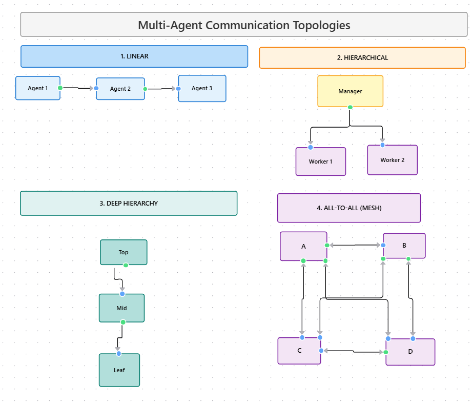

Module 5 — Episode 6
Training:Agentic AI Training
🎯 Learning Objectives
By the end of this episode, you will be able to:
- ✅ Identify and describe common communication patterns used in multi-agent systems
- ✅ Implement hierarchical and linear communication flows among agents
- ✅ Evaluate trade-offs between structured and unstructured communication models in autonomous systems
🧭 Overview
This episode explores how communication patterns shape the behavior and effectiveness of multi-agentic systems. Just as human teams rely on structured communication to coordinate tasks, agent systems require well-defined messaging architectures to collaborate effectively. Understanding these patterns helps developers design systems that balance coordination, autonomy, and predictability.
🧱 Prerequisites
Readers should already understand:
- Fundamentals of multi-agent systems and agent roles
- Task delegation and coordination mechanisms in agentic architectures
- Prior episode: Planning and Coordination in Multi-Agent Systems
🔑 Core Concepts
- Linear Communication Pattern – A sequential flow where each agent passes its output to the next. Simple, predictable, but limited in parallelism.
- Hierarchical Communication Pattern – A manager or coordinator agent delegates tasks to sub-agents and aggregates results. Enables control and oversight.
- Deep Hierarchical Pattern – A nested structure where sub-agents can themselves manage other agents, enabling scalability but increasing complexity.
- All-to-All Communication Pattern – Every agent can communicate with every other agent. Maximizes flexibility and emergent behavior but reduces predictability.
🖼 Visual Explanation
 Caption:This diagram compares four communication patterns: linear (A → B → C), hierarchical (Manager → specialists), deep hierarchical (nested delegation), and all-to-all (full connectivity). Each pattern offers different trade-offs in control, complexity, and adaptability.
⚙️ Technical Breakdown
How It Works
1. Linear Pattern:- Each agent performs a task and passes results to the next agent.
- Example: Researcher → Designer → Writer.
- Simple to implement; minimal coordination overhead.
2. Hierarchical Pattern:- A manager agent assigns tasks and collects results.
- Example: Marketing Manager → {Researcher, Designer, Writer}.
- Promotes centralized control and synchronization.
3. Deep Hierarchy:- Sub-agents can manage their own subordinate agents.
- Example: Researcher → {Web Researcher, Fact Checker}.
- Enables modular task decomposition but adds communication latency.
4. All-to-All Pattern:- Each agent can message any other agent at any time.
- Requires message routing and conflict resolution mechanisms.
- Encourages emergent collaboration but can lead to chaotic outcomes.
Why It Works
- Linear: Works best when tasks are strictly sequential and dependencies are clear.
- Hierarchical: Central coordination reduces conflict and ensures consistency.
- Deep Hierarchy: Mirrors real-world organizations, allowing scalable task delegation.
- All-to-All: Enables creativity and emergent problem-solving through unrestricted communication.
When To Use It
✅ Use Linear Patterns when:
- The workflow is sequential and deterministic.
- You need predictable, reproducible outputs.
✅ Use Hierarchical Patterns when:
- Tasks can be parallelized but need coordination.
- You need a single point of control or aggregation.
✅ Use Deep Hierarchies when:
- Tasks are complex and require sub-specialization.
- You need modular, layered control structures.
✅ Use All-to-All Patterns when:
- You’re exploring emergent behaviors or creative generation.
- Predictability is less critical than diversity of outcomes.
❌ Avoid All-to-All in high-stakes or mission-critical systems due to unpredictability.
Trade-offs & Limitations
| Pattern | Advantages | Limitations |
|---|---|---|
| Linear | Simple, predictable | Low flexibility, limited parallelism |
| Hierarchical | Central control, scalable | Single point of failure, coordination overhead |
| Deep Hierarchical | Modular, scalable | Complex debugging, latency |
| All-to-All | Emergent collaboration | Chaotic, hard to reproduce results |
Performance Considerations
- Linear: Minimal overhead; bottlenecked by slowest agent.
- Hierarchical: Scales with number of sub-agents; coordination latency possible.
- Deep Hierarchy: May require message queueing and async processing.
- All-to-All: Communication complexity grows quadratically (O(n²)); may require throttling or message filtering.
💻 Code Examples
Minimal Example – Hierarchical Coordination
class Agent:
def __init__(self, name):
self.name = name
def perform_task(self, data):
return f"{self.name} processed {data}"
class Manager(Agent):
def __init__(self, name, team):
super().__init__(name)
self.team = team
def coordinate(self, task):
results = []
for agent in self.team:
result = agent.perform_task(task)
results.append(result)
return f"{self.name} aggregated results: {results}"
# Example usage
researcher = Agent("Researcher")
designer = Agent("Designer")
writer = Agent("Writer")
manager = Manager("Marketing Manager", [researcher, designer, writer])
print(manager.coordinate("Marketing Plan"))
Marketing Manager aggregated results: ['Researcher processed Marketing Plan', 'Designer processed Marketing Plan', 'Writer processed Marketing Plan']
🧩 Key Takeaways
- Communication patterns define how agents coordinate and share information.
- Hierarchical patterns offer control and scalability, while all-to-all patterns provide flexibility and emergent behavior.
- The right pattern depends on your system’s goals — predictability vs. creativity, control vs. autonomy.
📚 Further Exploration
- Explore frameworks like LangGraph, CrewAI, or AutoGen for implementing multi-agent communication.
- Experiment with hybrid patterns — e.g., hierarchical control with peer-to-peer sub-communication.
- Study emergent behaviors in decentralized systems to inform adaptive agent design.